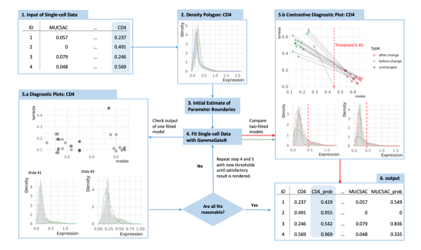
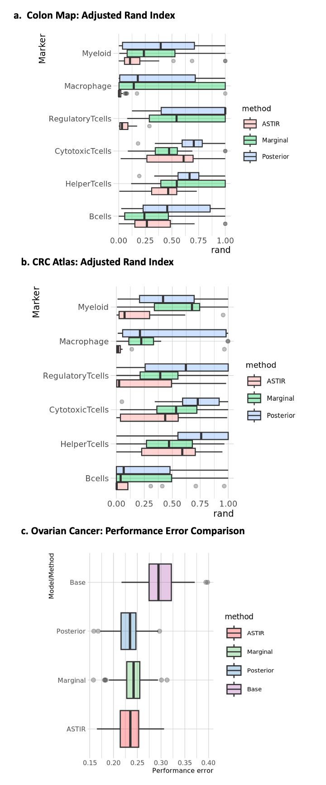

2 Chapter 2: GammaGateR
2.1 Research question
Before important spatial insights can be gleaned using statistical methods, mIF images undergo an intensive preprocessing pipeline to obtain single-cell measurements. While there are various steps included in the pipeline such as image registration, single-cell segmentation, quantification, and batch correction, cell phenotyping is typically the final step before downstream analyses on the cell-level data, similarly to other single-cell assays. Cell phenotyping identifies individual cell phenotypes from the measured marker expression values of the cell and directly affects the subsequent cell population analysis results.
The two most common approaches for cell phenotyping in mIF are manual gating and graph-based multivariate clustering. In manual gating, each sample is visualized separately to determine a threshold, and super-threshold cells are labeled as marker positive. This procedure is repeated for all marker channels and slides, and the phenotypes are determined by combining combinations of marker-positive cells. Alternatively, multivariate graph-based clustering is adapted from other single-cell assays. This approach first performs cell clustering, then assigns a phenotype to each cell group based on their average expression profile. Multivariate graph-based clustering is implemented with various modifications across many software packages. Unfortunately, both methods are labor intensive, and their accuracy suffers from image noise and spatial artifacts in mIF images that cause marker expression histograms to appear continuous or uni-modal . As a result, both phenotyping methods possess shortcomings that cannot be ignored. On one hand, manual gating can be subjective. On the other hand, graph-based clustering results are prone to over-clustering and producing poor separation between clusters.
2.2 Previous works
The challenges described above are well recognized and there are a few methods and software developed that attempt to automate cell phenotyping for mIF images. For example, CellSighter is a recently proposed supervised deep-learning algorithm for cell phenotyping that requires a “gold standard” training dataset. Another recent solution, ASTIR (Automated assignment of cell identity from single-cell multiplexed imaging and proteomic data), is a fast unsupervised approach that defines cell phenotypes from segmented cell-level data by using a neural network-based mixture model assuming a multivariate log-normal distribution. Instead of binary outputs like in classification methods, ASTIR returns posterior probabilities of different cell types for each cell. This type of output is advantageous because it offers more information than nominal cell types and leaves cell labeling to the clinician’s discretion. Lastly, Ahmadian et al. treat the analysis as a pixel classification problem and design a single-step framework for mIF phenotyping that is integrated with other preprocessing steps.
Nevertheless, inconsistencies persist in the results rendered by these learning-based methods when applied across markers, slides, batches, and datasets. These inconsistencies result from the immense variation in the cell-level distribution of phenotyping markers that are often too nuanced to be removed by existing batch correction methods. For these reasons, it is difficult to fully automate the cell phenotyping process, despite the availability of automated tools, and manual gating is still used to perform cell phenotyping because it is easy to visualize and evaluate the quality of the phenotype.
2.3 Methods
Because automated methods cannot be run without evaluation and supervised methods require a gold-standard dataset, no method is truly fully automated. As a solution, we develop an explicitly semi-automated algorithm called GammaGateR. GammaGateR allows the user to easily perform cell phenotyping, visualize results, and conduct interpretable quality control while reducing manual labor. Based on a novel closed-form Gamma mixture model (cfGMM), GammaGateR is a probabilistic model that is fitted to each channel and slide separately, and outputs positive-component probabilities for each marker. These can then be easily thresholded and combined for semi-automated marker gating or input directly into downstream analysis. GammaGateR has important technical advantages, including 1) improved computation time and model convergence due to its novel closed-form property, and 2) high consistency and reproducibility for phenotyping results across mIF data batches due to incorporation of parameter boundary constraints. In applications on real-world mIF data, we find that GammaGateR has fast and consistent results across many slides and markers. We provide an open-source implementation of our method in the new GammaGateR R package (https://github.com/jiangmeirubyxiong/gammagater).
2.3.1 GammaGateR
The GammaGateR algorithm is unique to existing methods for its focus on parsimoniously modeling cell-level marker expression densities. This approach yields tailored-to-slide model estimation in cell-level mIF data where marker expression distributions can vary substantially across slides. The algorithm uses a zero-inflated two-component GMM to model marker expression for each slide. The Gamma mixture model naturally identifies marker-positive and marker-negative cell distributions and returns the probability of belonging to the marker-positive cell distribution for each cell. The returned probabilities can either be used directly in subsequent analysis or combined and dichotomized to define cell phenotypes. GammaGateR incorporates user-specified constraints to provide consistent model fit across a large number of slides. The model evaluation methods included in GammaGateR allow the user to evaluate the constraints and quality check results. The power source of GammaGateR is the closed-form Gamma mixture model, which is a novel approach to phenotyping for mIF data that makes it more computationally efficient than traditional GMMs.

2.3.2 cfGMM
For mIF data, we use the GMM to fit cell marker expression values as a weighted sum of different probability distributions that represent unique cell populations [35]. The Gamma distribution is an excellent model for marker values because the domain of the Gamma distribution is strictly positive and it has the flexibility to model the varying skewed densities seen in mIF marker values (Figure 1.5.a). However, GMMs are not scalable for mIF image data, because they rely on computationally inefficient numerical methods to obtain the maximum likelihood estimator (MLE). The slow convergence of the MLE for the GMM makes it prohibitive to apply across a large number of channels, slides, and cells. As a solution, we develop a closed-form GMM (cfGMM; https://github.com/jiangmeirubyxiong/cfgmm) estimation procedure based on a recently developed estimator for the Gamma distribution [36]. In addition, to improve computational efficiency, the cfGMM has the benefit of allowing prior constraints on model parameters. With the cfGMM in GammaGateR, we enable the flexibility to include a biologically meaningful range for the mode of each component in the Gamma mixture model. This way, users of GammaGateR can restrict estimation to biologically meaningful values.
2.3.2.1 Derivation
We assume the data is a random sample \(x_1, \ldots, x_n\) from a \(K\) component generalized gamma mixture distribution. The density function of \(X\) is \[\begin{equation*} P(X=x)=\sum_{k=1}^K \lambda_k f(x; a_k, b_k, \gamma_k). \end{equation*}\] and the log-likelihood of the dataset is \[\begin{equation} \ell(\mathbf{x}|\mathbf{a},\mathbf{b},\pmb{\lambda})=\sum^n_{i=1}\log\left\{\sum^K_{k=1}\lambda_kf(x_i|a_k,b_k)\right\} \label{eq:loglikelihood} \end{equation}\] For each generalized gamma component \(k\), \(\lambda_k\in [0,1]\) are the mixture parameters, \(\sum_{k} \lambda_k = 1\); \(f\) denotes the generalized gamma density function; \(a_k, b_k, \gamma_k\) are the parameters for the generalized gamma.
Here, we use the expectation maximization (EM) algorithm [dempster_maximum_1977] for parameter estimation. EM algorithm is a standard approach for parameter estimation in mixture models. It introduces the latent multinomial variable \(Z_{i} = (Z_{i1}, \ldots, Z_{iK})\) into the model and maximizes the expected value of the complete data likelihood [dempster_maximum_1977]. The expectation of the complete data likelihood to be maximized for the generalized gamma distribution is \[\begin{equation*} \mathbb{E}_Z \ell(x \mid Z) = \sum_{i=1}^n \sum_{k=1}^K z_{ik} \log f(x_i; a_k, b_k,\gamma_k), \end{equation*}\] where \[\begin{equation} \label{eq:lambdaFormula} z_{ik} = \mathbb{P}(Z_{ik}=1 \mid x_i;\pmb{ a, b, \gamma} ) =\frac{f(x_i|a_k, b_k, \gamma_k)}{\displaystyle\sum^K_{j=1}f(x_i|a_j, b_j, \gamma_k)}, \end{equation}\] \(\mathbf{a} = (a_1, a_2, \ldots, a_K)\), and \(\mathbf{b}\), \(\pmb \lambda\) are similarly defined vectors.
From here, the maximization of the expectation is now analogous to the maximization of generalized gamma distribution for each component of the mixture model.
The expectation of log-likelihood is \[\begin{equation} \mathbb E_{z|x}[\log(L(\mathbf{x}|\mathbf{z}))]=\sum^{n}_{i=1}\sum^{K}_{k=1}z_{ik}\log f_k(x_i) \label{eq1} \end{equation}\] and \[\begin{equation} f_k(x)=G(a_k,b_k,{\gamma_k})=\frac{\lambda_k x^{a_k{\gamma_k}-1}exp\{(-x/b_k)^{{\gamma_k}}\}}{b_k^{a_k{\gamma_k}}\Gamma(a_k)} \label{eq2} \end{equation}\] where \({\gamma_k}=1\).
By eqref{eq1}, eqref{eq2} The expected joint log-likelihood is
\[\begin{multline} \label{eq3} \mathbb E_{z|x}[\log(L(\mathbf{x}|\mathbf{z}))]=\sum^{K}_{k=1}\sum^{n}_{i=1}z_{ik}\left( \log{\gamma_k}-a_k{\gamma_k} \log b_k-log\Gamma(a_k)+(a_k{\gamma_k}-1)\log X_i-(\frac{X_i}{b_k})^{{\gamma_k}} \right) \end{multline}\]
The estimators of each of the \(K\) terms of the expected joint log-likelihood are derived as follows:
first take derivative of the expression from eqref{eq3} \[\begin{align*}
\sum^{n}_{i=1} z_{ik}\left( \log{\gamma_k}-a_k{\gamma_k} \log b_k-\log\Gamma(a_k)+(a_k{\gamma_k}-1)\log X_i-\left(\frac{X_i}{b_k}\right)^{\gamma_k} \right)
\end{align*}\] with respect to \(a_k, b_k, {\gamma_k}\) separately:
\[\begin{align}\label{eq4}
\frac{\partial \mathbb E_{z|x}[\log(L(\mathbf{x}|\mathbf{z}))]}{\partial a_k}
=\sum^{n}_{i=1} z_{ik}(-\psi(a_k)-{\gamma_k} \log b_k+{\gamma_k} X_i)=0
\end{align}\] Note that \(\psi(x)=\displaystyle\frac{d }{dx}\log\Gamma(x)\) is digamma function. \[\begin{align}\label{eq5}
\frac{\partial \mathbb E_{z|x}[\log(L(\mathbf{x}|\mathbf{z}))]}{\partial b_k}
=\sum^{n}_{i=1}(z_{ik})(-a_k{\gamma_k}/b_k+{\gamma_k} X_i^{{\gamma_k}} b_k^{-{\gamma_k}-1})=0
\end{align}\] \[\begin{align}\label{eq6}
\frac{\partial \mathbb E_{z|x}[\log(L(\mathbf{x}|\mathbf{z}))]}{\partial {\gamma_k}}
=\sum^{n}_{i=1}z_{ik}\left(\frac{1}{\gamma_k}-a_k\log b_k+a_k\log X_i-\left(\frac{X_i}{b_k}\right)^{\gamma_k} \log\frac{X_i}{b_k}\right)=0
\end{align}\] Among which, eqref{eq5} can be solved as \[\begin{equation} \label{eq7}
\hat b_k(a_k,{\gamma_k})=\left(\frac{\displaystyle\sum^{n}_{i=1}z_{ik}X_i^{\gamma_k}}{a_k\displaystyle\sum^{n}_{i=1}z_{ik}}\right)^{1/{\gamma_k}}
\end{equation}\] Substitute eqref{eq7} into eqref{eq6}: \[\begin{align*}
&\frac{\partial \mathbb E_{z|x}[\log(L(\mathbf{x}|\mathbf{z}))]}{\partial {\gamma_k}}\\
&=\sum^{n}_{i=1}z_{ik}/{\gamma_k}+\sum^{n}_{i=1}a_kz_{ik}\log(\frac{X_i}{b_k})-\sum^{n}_{i=1}z_{ik}(\frac{X_i}{b_k}) ^{\gamma_k} \log(\frac{X_i}{b_k})\\
&=\sum^{n}_{i=1}z_{ik}/{\gamma_k}+\sum^{n}_{i=1}a_kz_{ik}(\log X_i-\log b_k)-b_k^{-{\gamma_k}}\sum^{n}_{i=1}z_{ik}X_i ^{\gamma_k} (\log X_i-\log b_k)\\
&=\sum^{n}_{i=1}z_{ik}/{\gamma_k}+\sum^{n}_{i=1}a_kz_{ik}\log X_i-\log b_k\sum^{n}_{i=1}a_kz_{ik}-b_k^{-{\gamma_k}}\sum^{n}_{i=1}z_{ik}X_i ^{\gamma_k} \log X_i+b_k^{-{\gamma_k}}\log b_k\sum^{n}_{i=1}z_{ik}X_i ^{\gamma_k}\\
&=\sum^{n}_{i=1}z_{ik}/{\gamma_k}+\sum^{n}_{i=1}a_kz_{ik}\log X_i-\log b_k\sum^{n}_{i=1}a_kz_{ik}-b_k^{-{\gamma_k}}\sum^{n}_{i=1}z_{ik}X_i ^{\gamma_k} \log X_i
\frac {a_k\displaystyle\sum^{n}_{i=1}z_{ik}}{\displaystyle\sum^{n}_{i=1}z_{ik}X_i^{\gamma_k}} \log b_k\displaystyle\sum^{n}_{i=1}z_{ik}X_i ^{\gamma_k}\\
&=\sum^{n}_{i=1}z_{ik}/{\gamma_k}+\sum^{n}_{i=1}a_kz_{ik}\log X_i-\log b_k\sum^{n}_{i=1}a_kz_{ik}-b_k^{-{\gamma_k}}\sum^{n}_{i=1}z_{ik}X_i ^{\gamma_k} \log X_i+{a_k\sum^{n}_{i=1}z_{ik}}\log b_k\\
&=\sum^{n}_{i=1}z_{ik}/{\gamma_k}+a_k\sum^{n}_{i=1}z_{ik}\log X_i-\frac {a_k\displaystyle\sum^{n}_{i=1}z_{ik}}{\displaystyle\sum^{n}_{i=1}z_{ik}X_i^{\gamma_k}}\sum^{n}_{i=1}z_{ik}X_i ^{\gamma_k} \log X_i\\
&=\sum^{n}_{i=1}z_{ik}/{\gamma_k}+a_k\left(\sum^{n}_{i=1}z_{ik}\log X_i-\frac {\displaystyle\sum^{n}_{i=1}z_{ik}}{\displaystyle\sum^{n}_{i=1}z_{ik}X_i^{\gamma_k}}\sum^{n}_{i=1}z_{ik}X_i ^{\gamma_k} \log X_i\right)=0\\
\end{align*}\]
Solving this, we have \[\begin{equation} \label{eq8}
\hat a_k ({\gamma_k})=\displaystyle\frac{\displaystyle\sum^{n}_{i=1}\displaystyle\frac{z_{ik}}{{\gamma_k}}}
{\displaystyle\frac{\displaystyle\sum^{n}_{i=1}z_{ik}}{\displaystyle\sum^{n}_{i=1}z_{ik}X_i^{\gamma_k}}\sum^{n}_{i=1}z_{ik}X_i ^{\gamma_k} \log X_i-\sum^{n}_{i=1}z_{ik}\log X_i}
\end{equation}\]
Plug \({\gamma_k}=1\) in eqref{eq8}, we now have \[\begin{align} \hat a_k ({\gamma_k}=1)&=\displaystyle\frac{\displaystyle\sum^{n}_{i=1}z_{ik}}{\displaystyle\frac {\displaystyle\sum^{n}_{i=1}z_{ik}}{\displaystyle\sum^{n}_{i=1}z_{ik}X_i}\sum^{n}_{i=1}z_{ik}X_i \log X_i-\sum^{n}_{i=1}z_{ik}\log X_i}\nonumber\\ &=\left(\frac {\sum^{n}_{i=1}z_{ik}X_i\log X_i}{\sum^{n}_{i=1}z_{ik}X_i}-\frac{\sum^{n}_{i=1}z_{ik}\log X_i}{\sum^{n}_{i=1}z_{ik}}\right)^{-1}\nonumber\\ &=\frac{\displaystyle\sum^{n}_{i=1}z_{ik}\displaystyle\sum^{n}_{i=1}z_{ik}X_i}{\displaystyle\sum^{n}_{i=1}z_{ik}\displaystyle\sum^{n}_{i=1}z_{ik}X_i\log X_i-\displaystyle\sum^{n}_{i=1}z_{ik}\log X_i\displaystyle\sum^{n}_{i=1}z_{ik}X_i}\label{eq:ak} \end{align}\] \[\begin{align} \hat b_k(\hat a_k,{\gamma_k}=1)&=\frac{\displaystyle\sum^{n}_{i=1}z_{ik}X_i}{\hat a_k\displaystyle\sum^{n}_{i=1}z_{ik}} \nonumber\\ %&=\displaystyle\frac{\displaystyle\sum^{n}_{i=1}z_{ik}X_i}{\displaystyle\frac{\displaystyle\sum^{n}_{i=1}z_{ik}X_i\displaystyle\sum^{n}_{i=1}z_{ik}}{\displaystyle\sum^{n}_{i=1}z_{ik}\displaystyle\sum^{n}_{i=1}z_{ik}X_i\log X_i-\displaystyle\sum^{n}_{i=1}z_{ik}\log X_i\displaystyle\sum^{n}_{i=1}z_{ik}X_i}\displaystyle\sum^{n}_{i=1}z_{ik}} \nonumber\\ &=\frac{\displaystyle\sum^{n}_{i=1}z_{ik}\displaystyle\sum^{n}_{i=1}z_{ik}X_i\log X_i-\displaystyle\sum^{n}_{i=1}z_{ik}\log X_i\displaystyle\sum^{n}_{i=1}z_{ik}X_i}{\left(\displaystyle\sum^{n}_{i=1}z_{ik}\right)^2} \label{eq:bk} \end{align}\] In addition, \(\hat {\lambda}_k\) can simply be estimated as \[\begin{equation} \hat {\lambda}_k =\frac{\displaystyle\sum^{n}_{i=1}z_{ik}}{n} \label{eq:lambdak} \end{equation}\]
It is worth noting that we are not maximizing the exact Gamma distribution, therefore the algorithm we devise here is an EM-type algorithm.
2.4 Simulation

To compare the bias and compute time of the closed-form GMM to maximum likelihood GMM implementation, we run the cfGMM, the constrained cfGMM, and the GMM to evaluate bias and variance in a sample size of 10,000 across 1,000 simulations. We simulate a two-component mixture model with parameters \(\pmb{\lambda} = (0.3, 0.7), \pmb{a} = (0.5, 8), \pmb{b} = (0.5, 1/3)\). For the constrained estimator, we restrict the mode of each component to be in the range \((-\infty, 0)\) and \((0,5)\) for marker negative and marker positive components, respectively, which include the true mode for each component, \(0\) (no mode) and \(7/3\).
Both closed-form estimation procedures have substantially faster computation time than the MLE (Figure 2a) while maintaining similarly low bias (Figure 2b). The sample size used in the simulation is roughly similar to that of the cell-level mIF image dataset, which further proves that cfGMM brings computation efficiency to our target application. The closed-form GMM, therefore, enables computationally feasible, precise, and flexible model estimation when applied to a large number of channels and slides using GammaGateR. It is also worth noting that the constrained cfGMM converges slightly faster than without constraints. This implies that when using cfGMM, computational cost can be reduced with proper knowledge of biological priors.